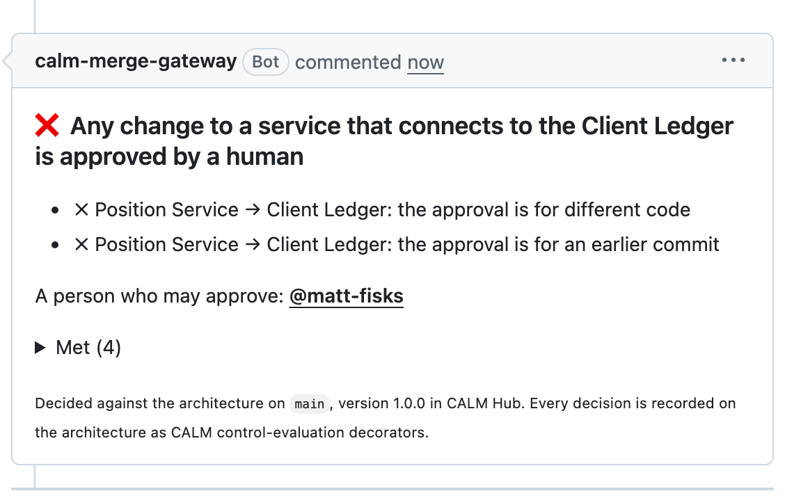
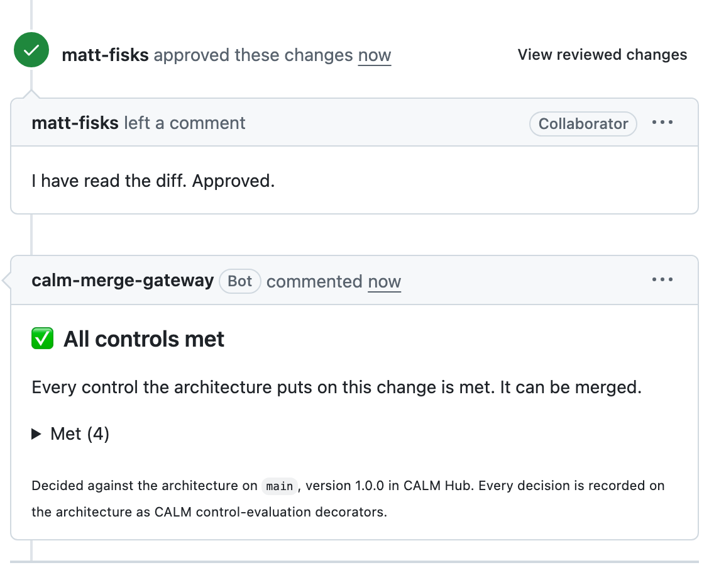
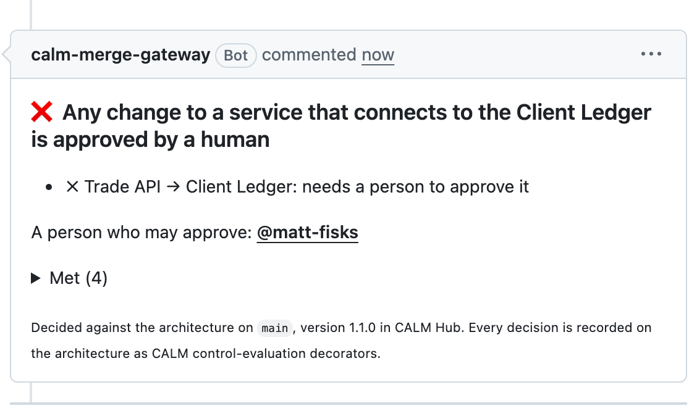
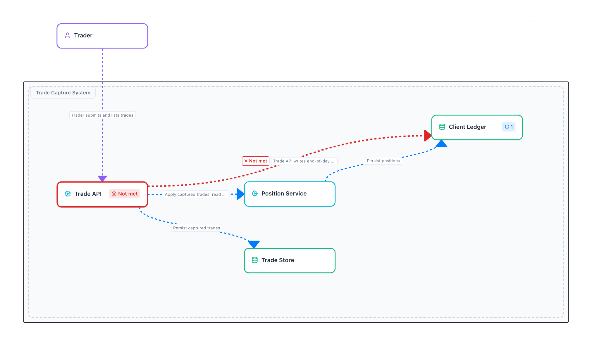

Governing the Agentic SDLC
When the architecture changes, the controls follow.
Matthew Bain and Aaron Searle
Aaron. Thirty five minutes, one story. I'll start with a problem every bank here has, and it's about to get much bigger. Matthew will show you a way out, live, on GitHub. The line to remember is on the slide: when the architecture changes, the controls follow.
Author: a bot. Reviewer: a bot. Merged.
Add position total endpoint #42
Merged coding-agent[bot] merged 1 commit into main
review-agent[bot] approved these changes 6 successful checks coding-agent[bot] merged into main
Aaron. A pull request like this merged somewhere this week. Written by an agent, reviewed by an agent, every check green. Nobody looked at it. Was that OK? You can't tell from this screen, and that's the problem. To know whether this change was risky, you'd need to know what that code talks to. Let me show you.
Meet a trade capture system
Five boxes. Traders send trades in; the Client Ledger keeps every client's positions.
Aaron. This is the system we'll use all talk, and you only need to learn it once. A trader sends trades to the Trade API. The Trade API stores them, and asks the Position Service to update positions. The Position Service writes to the Client Ledger, gold, on the right: the bank's book of record, every client's holdings. If the ledger is wrong, the bank is wrong.
Most changes are harmless
A new endpoint on the Trade API. Nothing near the ledger.
Aaron. Most changes look like this. A new endpoint on the Trade API: useful, low risk, nowhere near the ledger. You want these to go through fast. If a person has to approve every one, they stop reading.
Some are not
A change to the Position Service. It writes the Client Ledger.
Aaron. And then some changes are not harmless. The same kind of change, a new endpoint, but on the Position Service, and the Position Service writes to the ledger. Notice that nothing in the change itself says "ledger". It's risky because of where it sits on the map.
So banks have a rule like this:
Any change to a service that connects to the Client Ledger needs a person to approve it.
Aaron. So every bank has a rule like this one. Any change to a service that connects to the Client Ledger needs a person to approve it. Your auditors know it, your regulator expects it. This is the rule we'll follow for the rest of the talk.
Who checks that rule today?
A reviewer.
Someone who happens to know that this service talks to the ledger.
Aaron. Who actually checks that rule today? Honestly: a reviewer, from memory. Somebody who happens to know that the Position Service writes to the ledger. Maybe a CODEOWNERS file someone wrote two years ago. None of it notices when the system changes.
Now agents write the code
40 pull requests a day, from one agent
0 of them read the wiki first
1 reviewer, who can't remember everything
Memory doesn't scale. The rule needs to check itself.
Aaron. And now agents write the code. One agent can open forty pull requests a day. It has never read your wiki, and it takes the shortest path to green. Your reviewer can't remember everything. Memory doesn't scale. The rule needs to check itself.
The industry wrote the controls down, together
The FINOS SDLC Common Controls Catalog: banks and vendors, writing once what every bank was writing alone.
22 controls From code review to deployment gating
11 risks The things the controls exist to stop
Mapped To NIST SP 800-53, and to DORA, SSDF and SLSA where they fit
It says what must be true. Only your architecture knows where .
Aaron. The good news: the industry already wrote the controls down, together. In FINOS we built the SDLC Common Controls Catalog: twenty two controls, eleven risks, mapped to NIST and DORA. Code review is in there, including "risky changes need a person". But a catalog can only say what must be true. It can't know which of your changes are risky. Only your architecture knows that. Matthew.
Your architecture already knows which changes are risky .
It's just trapped in a picture.
Matthew. Here's the idea. Your architecture already knows which changes are risky: it knows the Position Service writes to the ledger. The trouble is that it's trapped in a picture on a wiki, and a picture can't check anything.
Write the map down as data
FINOS CALM: your architecture as code. Every box and every line is in a file.
{
"unique-id" :
"position-service-to-client-ledger" ,
"relationship-type" : {
"connects" : {
"source" :
{ "node" : "position-service" },
"destination" :
{ "node" : "client-ledger" }
}
}
}
Matthew. So write the map down as data. FINOS CALM is architecture as code: every box and every line in a file a machine can read. This is the red line on the map, Position Service connects to Client Ledger, as it sits in the file. Nothing exotic, just JSON, versioned in git next to the code.
Pin the rule to the box
The rule lives on the Client Ledger itself. It names the box, not a list of services.
Matthew. Then pin the rule to the box it protects. In CALM any box can carry controls, so the rule lives on the Client Ledger: any change to a service that connects to it needs a person. Look at what it doesn't say: it never names the Position Service. It names a relationship. So when the map changes, what the rule applies to changes with it. Remember that.
Every pull request asks the map
Pull request
from the agent
Architecture controls
which boxes does it touch?
which rules are on them?
✓ Merge
nothing needs a person
✗ Blocked
until a person approves
CALM Hub
every decision, pinned on the map
The check reads each rule with ergo , an open source project, and explains every answer in plain words.
Matthew. So every pull request asks the map. A check called Architecture controls works out which boxes the change touches and which rules are on them. Nothing needs a person: green, merge. Something does: blocked until a person approves, and it says why. It reads the rules with ergo, an open source project that explains every answer in words. And every decision goes back onto the map, in CALM Hub, as a record. Let's see it.
Rego says no. ergo says why.
An open source language for explainable policies on Open Policy Agent. Every decision is a report: what was checked, and why it passed or failed.
1 Subjects What you're judging, and where to find it.
every connection in the architecture
2 Scope Which of them the rule is about. The rest are recorded, not dropped.
into the Client Ledger, from a box this change touches
3 Checks What each one must pass.
a person approved this exact commit
One Rego file next to your policies. No lock-in. ergo.kosli.com
Matthew. A word on ergo, because it's what turns a no into a why. Plain policy engines answer allow or deny. ergo is an open source language on top of Open Policy Agent where every decision comes back as a report: what was checked and why it passed or failed. A rule has three parts. Subjects: what you're judging, for us every connection in the architecture. Scope: which of those the rule is about, for us connections into the Client Ledger from a box this change touches; the rest are recorded, not silently dropped. Checks: what each must pass, for us a person approved this exact commit. That report is what you'll see on the pull requests, and what lands on the map. It's one Rego file you copy next to your policies.
A real repository with the trade capture system and its architecture. The cast:
🤖 The agent calm-trade-agent writes code, opens pull requests
🔍 Review bot github-actions reviews every commit
🗺️ The check Architecture controls asks the map
✍️ The approver @aaronsearle Aaron, live: approves when a person is needed
📐 Matthew @rocketstack-matt the architect: changes the map
Matthew. Live mode: switch to the browser on the repository's pull requests. Backup: stay on the slides, every step is a screenshot; in them a demo account plays the approver. Introduce the cast. The agent is a GitHub App that writes code and opens pull requests. A review bot reviews every commit. The check, Architecture controls, asks the map. Aaron approves when a person is needed. And I'm the architect.
1. A harmless change live
The agent adds an endpoint to the Trade API. The review bot reviews it. Green: it can merge, no person needed.
Matthew. Live: the agent opens "Account summary endpoint on trade-api". The review bot approves it. The check runs: every control met, green, and I can press Merge. No person needed. This is the fast lane, and most changes should look like this.
2. A change near the ledger live
Same kind of change, on the Position Service. The code never mentions the ledger; the map does. Merging is blocked.
Matthew. Live: the agent opens "Position total endpoint on position-service". Same kind of change, same review bot. Red. The check says why, in words: Position Service connects to the Client Ledger, so a human must approve, and it names who can: Aaron. Nobody wrote "Position Service is risky" anywhere. The map did that. Merging is blocked.
3. A person approves live
The approver reads the real diff on GitHub and approves with the usual button. Green.
Aaron. Live: I open the pull request on my own laptop, read the actual diff, and approve with GitHub's own button. A few seconds later the check turns green. Nothing new to learn: it's the review button you already use. The difference is that the map decided I was needed.
4. One more line after approval live

The agent slips in one more line. GitHub still shows the approval, but it was for an earlier commit. Red again.
Matthew. Live: before anyone merges, the agent pushes one more line. GitHub still shows Aaron's approval in the timeline. But the check goes red: the approval was for an earlier commit, not this one. An approval counts for exactly what the person saw. Aaron approves again, and now we merge.
5. The shortcut live
The agent makes the Trade API read the ledger directly. That line isn't on the map, so it doesn't exist.
Matthew. Live: agents take the shortest path to green, so this one skips the Position Service and reads the ledger's file straight from the Trade API. Red: the architecture has no connection from Trade API to Client Ledger. If it's not on the map, it doesn't exist. But what if the business really needs it? The fix isn't a cleverer agent. It's an architect.
6. The architect changes the map live

I add one line to the architecture: the Trade API may write end-of-day snapshots to the ledger. Changing the map needs a person too. A person approves; it merges.
Matthew. Live: as the architect, I open a pull request that changes the architecture file: one new relationship, the Trade API writes end-of-day snapshots to the Client Ledger. Changing the map is changing the rules, so it needs a person too. Aaron approves, and I merge. CALM Hub now has version 1.1 of the architecture. Pause. What happens to a harmless Trade API change now?
7. The same harmless change, again live

A new endpoint on the Trade API, like change 1. Now the Trade API connects to the ledger, so it needs a person.
Matthew. Live: the agent opens "Trade count endpoint on trade-api". Exactly the kind of change that went straight through at the start. Red: Trade API now connects to the Client Ledger, so a human must approve. Nobody touched the rule, the check or the pipeline. Let it land.
Nobody touched the pipeline.
The architect changed the map, and the rule followed.
Matthew. Say it plainly. Nobody touched the pipeline, the rule, or a list of services. The architect changed the map, and the rule followed it. When the architecture changes, the controls follow.
And every decision is on the map
CALM Hub, version 1.1: the Trade API and its new line, marked not met, with the reason.

✗ Needs a person New in 1.1
Matthew. Every decision the check made is also on the architecture itself, in CALM Hub. Each one is a CALM decorator: met or not, which boxes, why, who approved, which commit. Here's version 1.1 with the Trade API in red. For an auditor, "who approved every change near the client ledger last quarter" stops being a project and becomes a query.
Why it matters
Developers Most changes fly through. When one is blocked, it says why, and who can help.
Architects The diagram can't go stale, because every change is checked against it.
Risk and audit The proof writes itself: every decision, on the map, with who approved what.
"Regulators treat unsubstantiated controls as absent controls." SDLC Common Controls Catalog, risk SDLC-RC-005
Aaron. Why should you care? Developers get a fast lane: most changes fly through, and a blocked one says why and who can help. Architects get a diagram that can't go stale, because every change is checked against it. And for risk and audit, the proof writes itself. One line from our own catalog: regulators treat unsubstantiated controls as absent controls. Here the evidence is a by-product.
Built from open parts
What to control The SDLC Common Controls Catalog, written once by the industry.
Where it applies FINOS CALM: the architecture as data, the rules on its boxes, the decisions back on the map.
How to decide An open source project that checks rules written as data and says why.
Everything you saw is real: the repository, the pull requests, the approvals, the checks and CALM Hub.
Aaron. None of this is a product. The catalog says what to control. CALM says where it applies, and holds the decisions. ergo, an open source project, decides and explains. Everything you saw was real: a real repository, real pull requests, real approvals.
Both. One ask. Pick one rule you already have. Pin it to one box in your architecture. Let the map say no. The demo repository, the code behind it, the catalog and CALM are all open. Bring what you learn back to FINOS.
Both. Thank you. Leave the line on screen: when the architecture changes, the controls follow. Then questions.